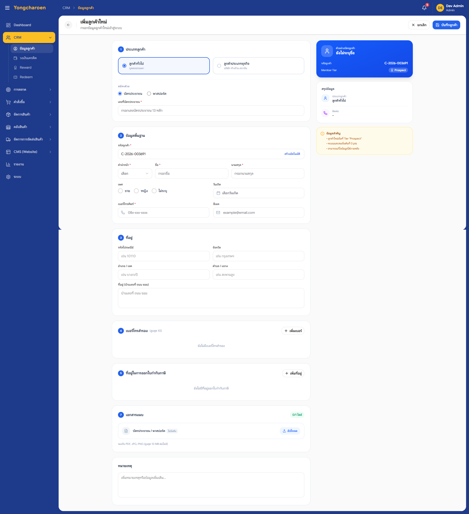
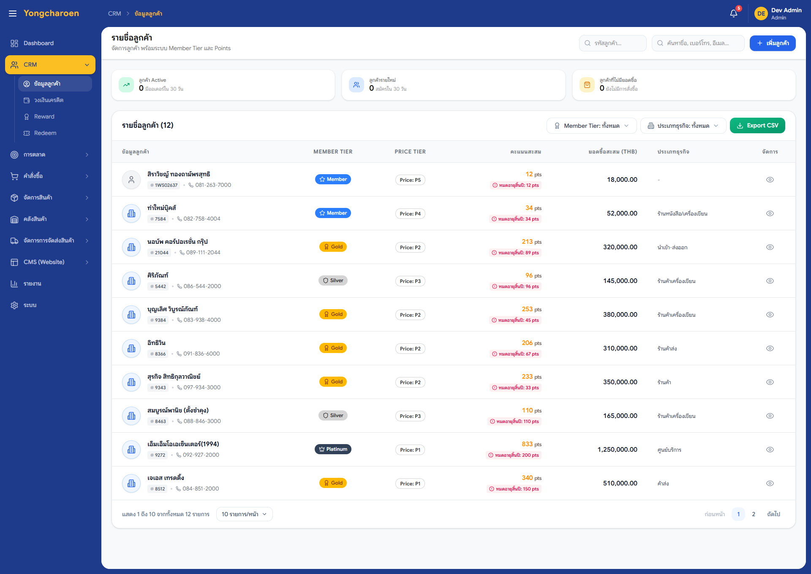

ระบบลูกค้าและสมาชิก
(Customer Management)
เอกสารฉบับนี้ระบุข้อกำหนดของระบบลูกค้าและสมาชิก (Customer Management) ครอบคลุมการสมัครสมาชิก การจัดการข้อมูลลูกค้า 2 ประเภท (บุคคลธรรมดา / นิติบุคคล) ระดับสมาชิก 7 ระดับ ระดับราคา P1-P5 คะแนนสะสม วงเงินเครดิตสำหรับลูกค้านิติบุคคล และการตรวจสอบประวัติคำสั่งซื้อ กฎเกณฑ์อ้างอิงจาก ysc_business_rules.html v2.2 หมวด 1, 5, 10
สารบัญ
- ข้อมูลเอกสารและการอนุมัติ
- วัตถุประสงค์เชิงธุรกิจ
- ขอบเขตของงาน (In / Out of Scope)
- ผู้มีส่วนได้ส่วนเสียและบทบาทผู้ใช้งาน
- สถานะปัจจุบัน (As-Is)
- กระบวนการในอนาคต (To-Be)
- ข้อกำหนดเชิงหน้าที่ — กรณีการใช้งาน (Use Cases)
- UC-CRM-001 ลูกค้าสมัครสมาชิกใหม่ผ่านเว็บไซต์
- UC-CRM-002 พนักงาน CC สร้างลูกค้าใหม่
- UC-CRM-003 ลูกค้าเข้าสู่ระบบ
- UC-CRM-004 ค้นหาและดูข้อมูลลูกค้าครบถ้วน
- UC-CRM-005 แก้ไขข้อมูลลูกค้า
- UC-CRM-006 ลูกค้านิติบุคคลขอวงเงินเครดิต
- UC-CRM-007 ปรับวงเงินเครดิตของลูกค้านิติบุคคล
- UC-CRM-008 เลื่อน / ลดระดับสมาชิก
- UC-CRM-009 จัดการระดับราคา (P1-P5)
- UC-CRM-010 ดูประวัติการสั่งซื้อและคะแนนสะสม
- UC-CRM-011 พนักงาน CC ดูสินค้ายอดนิยมที่ลูกค้าซื้อประจำ
- การออกแบบประสบการณ์ผู้ใช้ (Screen Inventory)
- กฎเกณฑ์เชิงธุรกิจ — อ้างอิงเอกสารแม่บท
- การเชื่อมต่อระบบภายนอก (Integration)
- การออกแบบข้อมูลและข้อมูลหลัก (Data & Master)
- ความปลอดภัยและสิทธิ์การเข้าถึง (Security & RBAC)
- ข้อกำหนดเชิงคุณภาพ (NFR)
- รายงานและแดชบอร์ดที่เกี่ยวข้อง
- ข้อกำหนดการโอนย้ายข้อมูล (Migration)
- สมมติฐานและข้อจำกัด
- เกณฑ์การยอมรับผลงาน (Acceptance Criteria)
- ประเด็นเปิดและความเสี่ยง
สรุปกรณีการใช้งาน (Use Case Catalog)
ตารางสรุปกรณีการใช้งานทั้ง 11 รายการของระบบลูกค้าและสมาชิก ครอบคลุมการสมัครสมาชิก การจัดการข้อมูล วงเงินเครดิต ระดับสมาชิก คะแนนสะสม รายละเอียดเต็มอยู่ในหัวข้อที่ 7
| # | รหัส | ชื่อกรณีการใช้งาน | ผู้ใช้งานหลัก | กฎที่เกี่ยวข้อง | สถานะ |
|---|---|---|---|---|---|
| 1 | UC-CRM-001 | ลูกค้าสมัครสมาชิกใหม่ผ่านเว็บไซต์ | ลูกค้า (บุคคลธรรมดา / นิติบุคคล) | AUTH-01 AUTH-02 NTF-03 | ยืนยัน |
| 2 | UC-CRM-002 | พนักงาน CC สร้างลูกค้าใหม่ | พนักงาน CC | AUTH-02 | ยืนยัน |
| 3 | UC-CRM-003 | ลูกค้าเข้าสู่ระบบ | ลูกค้า | NTF-04 | ยืนยัน |
| 4 | UC-CRM-004 | ค้นหาและดูข้อมูลลูกค้าครบถ้วน | พนักงาน CC | CC-05 | ยืนยัน |
| 5 | UC-CRM-005 | แก้ไขข้อมูลลูกค้า | ลูกค้า / พนักงาน CC | NTF-03 | ยืนยัน |
| 6 | UC-CRM-006 | ลูกค้านิติบุคคลขอวงเงินเครดิต | ลูกค้านิติบุคคล + ฝ่ายการเงิน | C-01 | ยืนยัน |
| 7 | UC-CRM-007 | ปรับวงเงินเครดิตของลูกค้านิติบุคคล | ฝ่ายการเงิน + หัวหน้าฝ่ายการเงิน | C-01 | ยืนยัน |
| 8 | UC-CRM-008 | เลื่อน / ลดระดับสมาชิก | ระบบอัตโนมัติ + ผู้ดูแลข้อมูลลูกค้า | หมวด 10 | รอยืนยัน P-03 |
| 9 | UC-CRM-009 | จัดการระดับราคา (P1-P5) | ผู้ดูแลข้อมูลลูกค้า | หมวด 10 | ยืนยัน |
| 10 | UC-CRM-010 | ดูประวัติการสั่งซื้อและคะแนนสะสม | ลูกค้า | NTF-05 | ยืนยัน |
| 11 | UC-CRM-011 | พนักงาน CC ดูสินค้ายอดนิยมที่ลูกค้าซื้อประจำ | พนักงาน CC | CC-05 D-007 | ยืนยัน |
1. ข้อมูลเอกสารและการอนุมัติ
1.1 ประวัติการแก้ไข
| เวอร์ชัน | วันที่ | รายละเอียดการเปลี่ยนแปลง | สถานะ |
|---|---|---|---|
| 1.0 | มี.ค. 2569 | ฉบับร่างแรก | เก่า |
| 2.0 | 16 พ.ค. 2569 | เขียนใหม่ทั้งฉบับ อ้างอิง Business Rules v2.2 ปรับโครงสร้างลูกค้า 2 ระดับ (ทั่วไป/ธุรกิจ → บุคคลธรรมดา/นิติบุคคล) ระดับสมาชิก 7 ระดับ (Prospect ถึง Coronet) ตัด OCR Slip ออก เพิ่ม UC ครบ 11 รายการ | ปัจจุบัน |
1.2 ผู้อนุมัติเอกสาร
| บทบาท | ชื่อ-นามสกุล | วันที่อนุมัติ | ลายเซ็น |
|---|---|---|---|
| เจ้าของผลิตภัณฑ์ (YSC) | ____________________ | ____________ | ____________ |
| หัวหน้าฝ่ายขาย (YSC) | ____________________ | ____________ | ____________ |
| หัวหน้าฝ่ายการเงิน (YSC) | ____________________ | ____________ | ____________ |
| ผู้จัดการโครงการ (Adeptio) | ____________________ | ____________ | ____________ |
2. วัตถุประสงค์เชิงธุรกิจ
ระบบลูกค้าและสมาชิกเป็นแหล่งข้อมูลหลักของลูกค้าทั้งหมดของยงเจริญฯ ครอบคลุมข้อมูลส่วนตัว ที่อยู่จัดส่ง ระดับสมาชิก ระดับราคา คะแนนสะสม วงเงินเครดิต ประวัติการสั่งซื้อ และการเชื่อมต่อกับ Customer Connect (โทรศัพท์ / LINE / อีเมล)
| รหัส | เป้าหมายธุรกิจ | ตัวชี้วัด |
|---|---|---|
| BG-CRM-1 | ลูกค้าสมัครและใช้งานได้สะดวก ลดอัตรา Drop-off ในขั้นตอนสมัคร | อัตราการสมัครสำเร็จ ≥ 90% |
| BG-CRM-2 | มีข้อมูลลูกค้าครบถ้วนและถูกต้อง ใช้ในการให้บริการของพนักงาน CC ได้ทันที | ข้อมูลลูกค้าครบ ≥ 95% ของฟิลด์ที่จำเป็น |
| BG-CRM-3 | รองรับลูกค้านิติบุคคลที่ต้องการวงเงินเครดิต พร้อมการตรวจสอบหลายระดับ | คำขอวงเงินดำเนินการเสร็จ ≤ 3 วันทำการ |
| BG-CRM-4 | ระบบคะแนนสะสมสนับสนุนการกลับมาซื้อซ้ำ | อัตราการกลับมาซื้อใน 90 วัน ≥ 35% |
| BG-CRM-5 | พนักงาน CC สามารถดูข้อมูลลูกค้าได้ในหน้าจอเดียว ไม่ต้องเปลี่ยนหน้า | เวลาให้บริการต่อสาย ลดลง 20% |
3. ขอบเขตของงาน (In / Out of Scope)
3.1 อยู่ในขอบเขต (In Scope)
- การสมัครสมาชิกผ่านเว็บไซต์และผ่านพนักงาน CC
- การยืนยันตัวตนด้วย OTP (อีเมลสำหรับสมัคร / เบอร์โทรสำหรับเปลี่ยนข้อมูล) ตาม AUTH-02, NTF-03
- การจัดการข้อมูลลูกค้า 2 ประเภท: ลูกค้าทั่วไป (บุคคลธรรมดา) และลูกค้าประเภทธุรกิจ (นิติบุคคล)
- ระดับสมาชิก 7 ระดับ (Prospect / Member / Silver / Gold / Platinum / Diamond / Coronet)
- ระดับราคา P1 ถึง P5 สำหรับลูกค้าแต่ละกลุ่ม
- คะแนนสะสม การใช้คะแนน การหมดอายุ ตาม หมวด 10
- วงเงินเครดิตของลูกค้านิติบุคคล การขออนุมัติ การปรับวงเงิน ตาม C-01 ถึง C-11
- การดูประวัติคำสั่งซื้อและสินค้ายอดนิยม 10 อันดับ ตาม CC-05
3.2 ไม่อยู่ในขอบเขต (Out of Scope)
- การสร้างคำสั่งซื้อใหม่ ดูเอกสาร OMS BRD
- การจัดการแคมเปญและโปรโมชั่นลูกค้า ดูเอกสาร Promotion BRD
- การออกใบกำกับภาษี ดูเอกสาร OMS BRD
4. ผู้มีส่วนได้ส่วนเสียและบทบาทผู้ใช้งาน
| บทบาท | หน้าที่ในระบบ CRM | สิทธิ์ |
|---|---|---|
| ลูกค้า (ปลายทาง) | สมัครสมาชิก แก้ไขข้อมูลส่วนตัว ดูประวัติคำสั่งซื้อ คะแนน | เฉพาะข้อมูลตนเอง |
| พนักงาน CC (Contact Center) | ค้นหาลูกค้า สร้างลูกค้าใหม่ ช่วยแก้ไขข้อมูล ดูประวัติคำสั่งซื้อ | อ่าน + แก้ไขเฉพาะส่วน |
| ผู้ดูแลข้อมูลลูกค้า (CRM Admin) | จัดการ Tier, ระดับราคา, ตรวจสอบข้อมูลซ้ำ | เต็มสิทธิ์ |
| หัวหน้าฝ่ายการเงิน | อนุมัติวงเงินเครดิตลูกค้านิติบุคคล | อนุมัติ |
| ฝ่ายการตลาด | ดูข้อมูลลูกค้าและพฤติกรรมเพื่อวางแคมเปญ | อ่าน (สถิติรวม) |
| ระบบ ConX ERP | แลกเปลี่ยนข้อมูลลูกค้านิติบุคคล (รหัสลูกค้า, วงเงิน, ประเภทใบกำกับ) | API |
5. สถานะปัจจุบัน (As-Is)
- ฐานข้อมูลลูกค้ากระจาย ลูกค้าออนไลน์อยู่ที่ระบบเก่า ลูกค้าเครดิตอยู่ใน ConX
- การสมัครต้องใช้กระดาษสำหรับลูกค้านิติบุคคล ส่งเอกสารทาง Email หรือมาส่งที่บริษัท
- การปรับวงเงินใช้ Excel ไม่มีการอนุมัติเป็นระบบ
- พนักงาน CC ต้องเปิดหลายระบบ เพื่อดูข้อมูลลูกค้าครบ
- ระดับสมาชิกประกาศด้วยมือ ไม่มีการคำนวณอัตโนมัติจากยอดซื้อ
6. กระบวนการในอนาคต (To-Be)
- ฐานข้อมูลลูกค้าเดียว ระบบของ Adeptio เป็นแหล่งข้อมูลหลัก ส่งให้ ConX สำหรับลูกค้านิติบุคคล
- สมัครออนไลน์ครบกระบวนการ รวมถึงลูกค้านิติบุคคล อัปโหลดเอกสารผ่านเว็บ
- ระดับสมาชิกคำนวณอัตโนมัติ จากยอดซื้อในช่วงที่กำหนด (รอยืนยันรอบการคำนวณ)
- ขอวงเงินผ่านระบบ มีลำดับการอนุมัติชัดเจน
- หน้าจอรวมข้อมูลลูกค้า พนักงาน CC ดูข้อมูลครบในหน้าเดียว
7. ข้อกำหนดเชิงหน้าที่ — กรณีการใช้งาน (Use Cases)

ลูกค้าใหม่สมัครสมาชิกผ่านเว็บไซต์เพื่อให้สามารถสั่งซื้อสินค้าได้ (Guest Checkout ไม่รองรับ ตาม AUTH-01)
ลูกค้ามีอีเมลและเบอร์โทรศัพท์ใช้งานได้
ลูกค้ากดปุ่ม "สมัครสมาชิก" ที่ หน้าจอเข้าสู่ระบบ
- ลูกค้าเลือกประเภท: ลูกค้าทั่วไป (บุคคลธรรมดา) หรือ ลูกค้าประเภทธุรกิจ (นิติบุคคล)
- ลูกค้ากรอกอีเมล ระบบส่ง OTP ไปยังอีเมล (ตาม AUTH-02)
- ลูกค้ายืนยัน OTP จากอีเมล
- ลูกค้ากรอกข้อมูลส่วนตัว: ชื่อ-สกุล, เบอร์โทร, ที่อยู่จัดส่ง
- กรณีลูกค้านิติบุคคล: ลูกค้ากรอกเลขทะเบียนนิติบุคคล (13 หลัก), ชื่อบริษัท, ที่อยู่ตามทะเบียน, ที่อยู่ออกใบกำกับภาษี
- กรณีลูกค้านิติบุคคล: อัปโหลดเอกสาร (หนังสือรับรอง, ภ.พ.20, สำเนาบัตรประชาชนกรรมการ)
- ลูกค้ายอมรับเงื่อนไขการใช้งาน
- ลูกค้ากดปุ่ม "สมัคร"
- ระบบสร้างบัญชีลูกค้าระดับ Prospect และเข้าสู่ระบบทันที
- กรณีลูกค้านิติบุคคล: ระบบส่งคำขออนุมัติเอกสารให้ผู้ดูแลข้อมูลลูกค้า
- ลูกค้ามีบัญชีในระบบ พร้อมสั่งซื้อ
- ลูกค้านิติบุคคล: รอการตรวจสอบเอกสารจากผู้ดูแล
- ระบบส่งอีเมลต้อนรับและข้อมูลการใช้งานพื้นฐาน
หน้าจอ: หน้าจอเข้าสู่ระบบ, หน้าจอสมัครสมาชิก · กฎเกณฑ์: AUTH-01, AUTH-02, NTF-03

พนักงาน CC สร้างบัญชีลูกค้าใหม่แทนลูกค้า เมื่อลูกค้าโทรเข้ามาสั่งซื้อแต่ยังไม่มีบัญชี
- พนักงาน CC เข้า หน้าจอรายการลูกค้า กด "สร้างลูกค้าใหม่"
- พนักงาน CC ระบุประเภท: ทั่วไป / ธุรกิจ
- พนักงาน CC กรอกข้อมูลตามที่ลูกค้าบอกทางโทรศัพท์
- ระบบส่ง OTP ไปยังอีเมลลูกค้า ลูกค้าแจ้งรหัสกลับ
- พนักงาน CC ใส่รหัสและบันทึก
- ระบบสร้างบัญชีและส่งอีเมล Welcome พร้อมลิงก์ตั้งรหัสผ่าน

- ลูกค้าเปิด หน้าจอเข้าสู่ระบบ
- ลูกค้ากรอกอีเมลและรหัสผ่าน
- ระบบตรวจสอบและเข้าสู่ระบบ
- ระบบแสดง หน้าจอหลักของบัญชีฉัน

พนักงาน CC ค้นหาลูกค้าและดูข้อมูลทั้งหมดในหน้าเดียวเพื่อให้บริการอย่างรวดเร็ว
- พนักงาน CC เปิด หน้าจอรายการลูกค้า
- พนักงาน CC ค้นหาด้วย: เบอร์โทร / อีเมล / ชื่อ / รหัสลูกค้า / เลขทะเบียนนิติบุคคล
- ระบบแสดงรายการที่ตรงกับคำค้น
- พนักงาน CC คลิกที่ลูกค้า ระบบเปิด หน้าจอข้อมูลลูกค้าครบถ้วน
- หน้าจอแสดงแถบ: ข้อมูลทั่วไป / ที่อยู่ / ประวัติคำสั่งซื้อ / คะแนน / วงเงิน (กรณีนิติบุคคล) / สินค้ายอดนิยม

- ผู้ใช้เปิด หน้าจอข้อมูลลูกค้าครบถ้วน กด "แก้ไข"
- ผู้ใช้แก้ไขข้อมูล เช่น ที่อยู่จัดส่ง, เบอร์โทร
- กรณีแก้เบอร์โทร / อีเมล: ระบบส่ง OTP ไปยังเบอร์โทรเดิม ตาม NTF-03
- ผู้ใช้กรอก OTP และยืนยัน
- ระบบบันทึกการเปลี่ยนแปลงและ Activity Log

ลูกค้านิติบุคคลขอวงเงินเครดิตเพื่อสั่งซื้อแบบเครดิตเทอม
ลูกค้าเป็นนิติบุคคลและผ่านการตรวจสอบเอกสารแล้ว
- ลูกค้าเข้าสู่บัญชีและเลือก "ขอวงเงินเครดิต"
- ลูกค้ากรอกวงเงินที่ต้องการและเครดิตเทอม (15 / 30 / 60 วัน)
- ลูกค้าอัปโหลดเอกสารเพิ่ม (งบการเงิน, ใบรับรองหักภาษี ณ ที่จ่าย)
- ระบบส่งคำขอให้ฝ่ายการเงินตรวจสอบ
- ฝ่ายการเงินตรวจสอบ ปรับวงเงินที่อนุมัติ และส่งต่อให้หัวหน้าฝ่ายการเงินอนุมัติ
- เมื่ออนุมัติ ระบบส่งอีเมลแจ้งลูกค้าและปรับวงเงินในระบบ
- ระบบส่งวงเงินที่อนุมัติไปยัง ConX ERP

- ฝ่ายการเงินเปิด หน้าจอจัดการวงเงินเครดิต
- เลือกลูกค้าและกด "ปรับวงเงิน"
- กรอกวงเงินใหม่ เครดิตเทอมใหม่ และเหตุผล
- หัวหน้าฝ่ายการเงินอนุมัติ
- ระบบบันทึกและส่งข้อมูลไปยัง ConX

ระบบเลื่อนหรือลดระดับสมาชิกของลูกค้าตามยอดซื้อสะสมในช่วงเวลาที่กำหนด
- ระบบคำนวณยอดซื้อสะสมของลูกค้าทุกราย ในช่วงเวลาที่กำหนด
- ระบบเทียบกับเกณฑ์ของแต่ละระดับสมาชิก (7 ระดับ)
- ระบบเลื่อนหรือลดระดับให้ตรงกับยอด
- ระบบส่งอีเมลแจ้งลูกค้าและบันทึกใน Activity Log

- ผู้ดูแลข้อมูลลูกค้าเปิด หน้าจอข้อมูลลูกค้าครบถ้วน
- กดที่ป้ายระดับราคา และเลือกระดับใหม่ (P1 ถึง P5)
- กรอกเหตุผลและบันทึก
- ระบบส่งระดับใหม่ให้ระบบราคาใช้ในการคำนวณ

- ลูกค้าเข้าสู่บัญชี เลือก "ประวัติคำสั่งซื้อ" หรือ "คะแนนของฉัน"
- ระบบแสดงรายการคำสั่งซื้อทั้งหมดเรียงตามเวลา / ยอดเงิน / สถานะ
- ระบบแสดงคะแนนปัจจุบัน คะแนนที่ใช้ไป คะแนนที่กำลังจะหมดอายุ
- ลูกค้าสามารถเลือกใช้คะแนนแทนเงินสด (ตามเงื่อนไข) หรือแลกของรางวัล

พนักงาน CC เห็นสินค้ายอดนิยม 10 อันดับที่ลูกค้าซื้อประจำ เพื่อให้บริการได้รวดเร็ว
- พนักงาน CC เปิด หน้าจอข้อมูลลูกค้าครบถ้วน
- กดที่แถบ "สินค้ายอดนิยม"
- ระบบแสดง 10 อันดับสินค้าที่ลูกค้าซื้อประจำ (ค่า Median 6 เดือน)
- พนักงาน CC สามารถ "หยิบเข้าตะกร้า" จากที่นี่ทันที
8. การออกแบบประสบการณ์ผู้ใช้ (Screen Inventory)
| รหัสหน้าจอ | ชื่อหน้าจอ | หน้าที่หลัก |
|---|---|---|
| SCR-CRM-001 | หน้าจอเข้าสู่ระบบ | ลูกค้าเข้าสู่ระบบด้วยอีเมล / รหัสผ่าน หรือกู้คืนรหัสผ่าน |
| SCR-CRM-002 | หน้าจอสมัครสมาชิก | ลูกค้าใหม่กรอกข้อมูลและสมัคร (ทั่วไป / ธุรกิจ) |
| SCR-CRM-003 | หน้าจอรายการลูกค้า | พนักงาน CC ค้นหาลูกค้า สร้างใหม่ ดูสถานะ |
| SCR-CRM-004 | หน้าจอข้อมูลลูกค้าครบถ้วน | หน้าเดียวรวมข้อมูลลูกค้า: ทั่วไป / ที่อยู่ / ประวัติ / คะแนน / วงเงิน |
| SCR-CRM-005 | หน้าจอจัดการวงเงินเครดิต | ฝ่ายการเงินดูและปรับวงเงินของลูกค้านิติบุคคล |
| SCR-CRM-006 | หน้าจอประวัติคำสั่งซื้อ | ลูกค้าดูประวัติคำสั่งซื้อของตนเอง |
| SCR-CRM-007 | หน้าจอคะแนนและของรางวัล | ลูกค้าดูคะแนน ใช้คะแนน แลกของรางวัล |
9. กฎเกณฑ์เชิงธุรกิจ — อ้างอิงเอกสารแม่บท
| รหัส | กฎเกณฑ์ |
|---|---|
| AUTH-01 | ห้าม Guest Checkout ลูกค้าต้องสมัครก่อนสั่งซื้อ |
| AUTH-02 | สมัครผ่านเว็บ ส่ง OTP ไปยังอีเมล หลังสมัครพร้อมใช้งานทันที |
| C-01 ถึง C-11 | วงเงินเครดิตสำหรับลูกค้านิติบุคคล |
| หมวด 10 | ระดับสมาชิก 7 ระดับ ระดับราคา P1-P5 และคะแนนสะสม |
| CC-05 | พนักงาน CC ดูสินค้ายอดนิยม 10 อันดับ (Median 6 เดือน) |
| NTF-03 | OTP สมัครใช้อีเมล เปลี่ยนข้อมูลใช้เบอร์โทร |
| NTF-04 | OTP สำหรับธุรกรรมที่มีความเสี่ยงสูง |
| NTF-05 | แจ้งเตือนคะแนนใกล้หมดอายุ |
10. การเชื่อมต่อระบบภายนอก (Integration)
| ระบบ | ข้อมูลที่แลกเปลี่ยน | ทิศทาง | ความถี่ |
|---|---|---|---|
| ConX ERP | รหัสลูกค้านิติบุคคล, วงเงิน, เครดิตเทอม, ประเภทใบกำกับ | 2 ทาง | เวลาจริง |
| Customer Connect | ข้อมูลลูกค้าสำหรับให้บริการ CC (โทร / LINE / อีเมล) | ระบบ → Customer Connect | เวลาจริง |
| LINE Official Account | การเชื่อมบัญชีลูกค้ากับ LINE สำหรับแจ้งเตือน | 2 ทาง | เวลาจริง |
| ระบบส่ง OTP | ส่งรหัส OTP ไปอีเมลและ SMS | ระบบ → ผู้ให้บริการ | เวลาจริง |
11. การออกแบบข้อมูลและข้อมูลหลัก (Data & Master)
| หน่วยข้อมูล | คำอธิบาย | คีย์หลัก |
|---|---|---|
| Customer | ลูกค้า 1 บัญชี (ทั่วไป หรือ นิติบุคคล) | Customer ID |
| Address | ที่อยู่จัดส่ง / ออกใบกำกับภาษี (หลายต่อ 1 ลูกค้า) | Address ID |
| Member Tier | ระดับสมาชิก 7 ระดับ | Tier Code |
| Price Level | ระดับราคา P1 ถึง P5 | Price Level Code |
| Loyalty Point | คะแนนสะสมของลูกค้า + ประวัติการได้รับ / ใช้ | Customer + Year |
| Credit Limit | วงเงินเครดิตของลูกค้านิติบุคคล | Customer ID |
| Customer Document | เอกสารแนบ (หนังสือรับรอง, ภ.พ.20) | Document ID |
| Activity Log | ประวัติการแก้ไขข้อมูลลูกค้า | Log ID + Timestamp |
12. ความปลอดภัยและสิทธิ์การเข้าถึง (Security & RBAC)
| บทบาท | สร้าง | ดูข้อมูลส่วนตัว | อนุมัติวงเงิน | ปรับ Tier / Price Level |
|---|---|---|---|---|
| ลูกค้า | ของตนเอง | ของตนเอง | - | - |
| พนักงาน CC | ทำได้ | ทำได้ | - | - |
| CRM Admin | ทำได้ | ทำได้ | - | ทำได้ |
| ฝ่ายการเงิน | - | ทำได้ (นิติบุคคล) | ระดับ 1 | - |
| หัวหน้าฝ่ายการเงิน | - | ทำได้ | ระดับ 2 (อนุมัติสุดท้าย) | - |
13. ข้อกำหนดเชิงคุณภาพ (NFR)
| หัวข้อ | เกณฑ์ |
|---|---|
| เวลาตอบสนอง | โหลดข้อมูลลูกค้าครบถ้วน ≤ 2 วินาที |
| ความปลอดภัย | เข้ารหัสข้อมูลส่วนตัวตามมาตรฐาน PDPA |
| OTP | OTP มีอายุ 10 นาที ส่งใหม่ได้สูงสุด 3 ครั้งต่อชั่วโมง |
| การรองรับ | รองรับลูกค้า ≥ 200,000 บัญชี |
14. รายงานและแดชบอร์ดที่เกี่ยวข้อง
- รายงานลูกค้าใหม่ รายวัน / รายเดือน แยกตามประเภทและช่องทางสมัคร
- รายงานการเลื่อน / ลดระดับสมาชิก ประจำงวด
- รายงานวงเงินเครดิตที่ใช้ไป ลูกค้านิติบุคคลรายตัว
- รายงานคะแนนสะสม ออก / ใช้ / หมดอายุ
- แดชบอร์ดสำหรับฝ่ายการตลาด สรุปข้อมูลลูกค้าที่ไม่กระทบความเป็นส่วนตัว
15. ข้อกำหนดการโอนย้ายข้อมูล (Migration)
- นำเข้าข้อมูลลูกค้าจากระบบเดิมและ ConX
- ตรวจสอบและรวบรวมรายการซ้ำ (เบอร์โทร, อีเมล, เลขทะเบียนนิติบุคคล)
- ลูกค้าเดิมต้องตั้งรหัสผ่านใหม่ในการเข้าสู่ระบบครั้งแรก ผ่าน OTP
- คะแนนสะสมและประวัติคำสั่งซื้อย้อนหลังโอนเข้าระบบใหม่
16. สมมติฐานและข้อจำกัด
- ลูกค้านิติบุคคลต้องมีเอกสารครบตามที่กำหนดก่อนใช้งานวงเงินเครดิตได้
- OTP ส่งผ่านอีเมล / SMS โดยใช้ผู้ให้บริการที่ Adeptio เลือก
- ข้อมูลลูกค้าจากระบบเดิมอาจไม่ครบทุกฟิลด์ ต้องมีกระบวนการเสริม
17. เกณฑ์การยอมรับผลงาน (Acceptance Criteria)
| รหัส | เกณฑ์ | UC อ้างอิง |
|---|---|---|
| AC-CRM-G-01 | ผู้ใช้สามารถสมัคร เข้าสู่ระบบ และจัดการข้อมูลตนเองได้ | UC-CRM-001, 003, 005 |
| AC-CRM-G-02 | ลูกค้านิติบุคคลขอวงเงินและได้รับการอนุมัติได้ครบกระบวนการ | UC-CRM-006, 007 |
| AC-CRM-G-03 | พนักงาน CC ดูข้อมูลลูกค้าครบถ้วนในหน้าเดียว | UC-CRM-004 |
| AC-CRM-G-04 | คะแนนสะสมและระดับสมาชิกคำนวณถูกต้องตามกฎ | UC-CRM-008, 010 |
| AC-CRM-G-05 | OTP ทำงานครบทุกกรณี (สมัคร / เปลี่ยนเบอร์ / ธุรกรรมเสี่ยง) | UC-CRM-001, 005 |
18. ประเด็นเปิดและความเสี่ยง
| รหัส | ประเด็น / ความเสี่ยง | ผลกระทบ |
|---|---|---|
| Q-CRM-001 | เกณฑ์ยอดซื้อสำหรับแต่ละระดับสมาชิก (Prospect → Coronet) รอฝ่ายการตลาด | ระดับสมาชิก |
| Q-CRM-002 | อัตราส่วนคะแนนต่อบาท รอฝ่ายการตลาด | คะแนนสะสม |
| Q-CRM-003 | จังหวะการเลื่อน / ลดระดับสมาชิก (ทันที / สิ้นปี) P-03 | ระดับสมาชิก |
| Q-CRM-004 | ตารางอำนาจการอนุมัติเครดิตของแต่ละตำแหน่ง P-02 | วงเงิน |
| R-CRM-001 | ความเสี่ยง: PDPA การจัดเก็บและประมวลผลข้อมูลส่วนตัว | กฎหมาย |
| R-CRM-002 | ความเสี่ยง: การโอนย้ายข้อมูลลูกค้าเก่าอาจมีข้อมูลซ้ำหรือไม่ครบ | ความน่าเชื่อถือ |